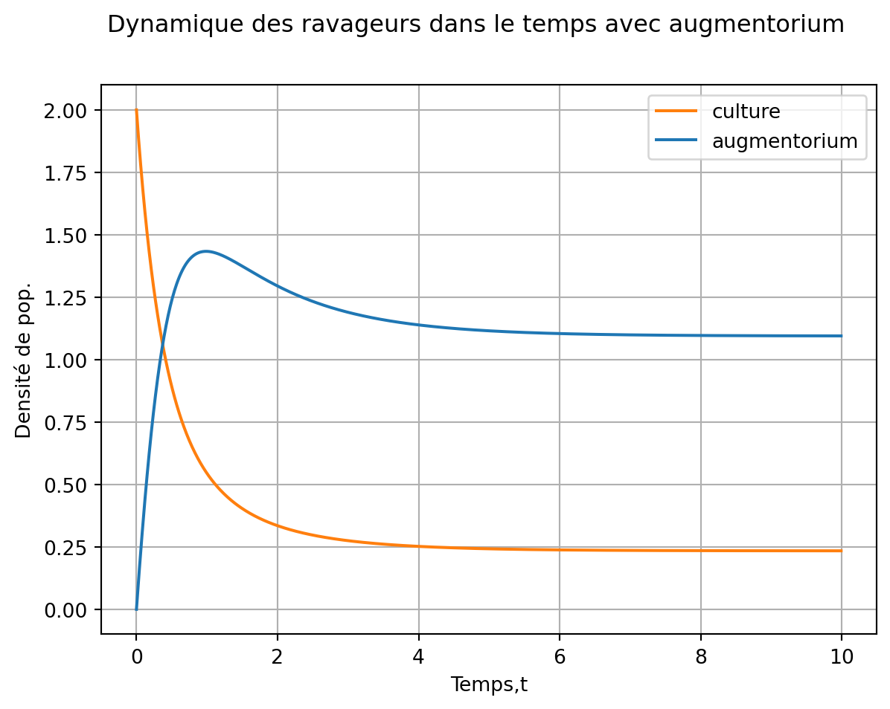
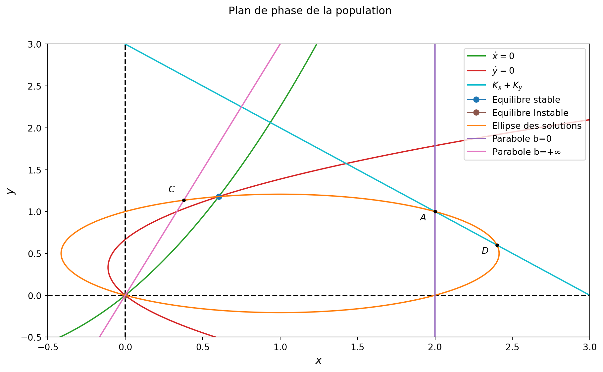
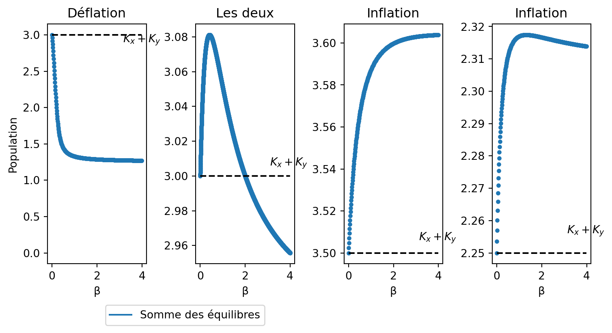
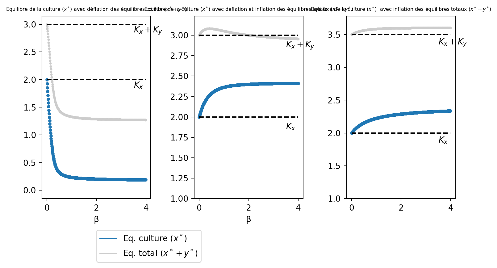

Code
import numpy as np
import matplotlib.pyplot as plt
from scipy.integrate import odeintModules à importer :
import numpy as np
import matplotlib.pyplot as plt
from scipy.integrate import odeintLe but d’un augmentorium est de confiner les ravageurs dans un espace clos qui ne laisse pas (ou peu) s’échapper ceux-ci.
Ainsi, il s’établit une migration assymétrique entre les deux structures qu’on peut modéliser en établissant le modèle suivant d’après Arditi (2018) :
\left\{\begin{array}{l} \dot x = r_xx(1-\frac{x}{K_x})+\beta\left(\frac{y}{\gamma_y}-\frac{x}{\gamma_x}\right)\\ \dot y = r_yy(1-\frac{y}{K_y})+\beta\left(\frac{x}{\gamma_x}-\frac{y}{\gamma_y}\right) \end{array}\right. \tag{1}
avec :
- x la population dans la culture,
- y la population dans l’augmentorium,
- r_x et r_y le taux de croissance dans la culture et dans l’augmentorium,
- K_x et K_y les capacités biotiques de la culture de de l’augmentorium,
- \beta la force de migration entre les structures,
- \gamma_x et \gamma_y caractérisant l’assymétrie de migration.
En plus des hypothèses faites avant on peut aussi dire que le taux de fuite des ravageurs (\frac{1}{\gamma_y}) se doit d’être beaucoup plus petit que le taux de migration (\frac{1}{\gamma_x}).
On a donc \gamma_x << \gamma_y.
Encore une fois on simule la dynamique des deux populations en fonction du temps en codant comme dans la première partie
On définit le système sous Python:
def aug(etat,t,param):
rx,ry,Kx,Ky,b,gx,gy=param
x,y=etat
s=[rx*x*(1-x/Kx)+b*(y/gy-x/gx),ry*y*(1-y/Ky)+b*(x/gx-y/gy)]
return sEt on définit les paramètres, le temps d’intégration etc. :
# Temps d'intégration:
ti = np.arange(0,10,0.01)
# Etats initiaux:
x0=2
y0=0
e0=[x0,y0]
# Paramètres:
rx=0.5
ry=1
Kx=2
Ky=1
b=1
gx=0.5
gy=3
param_aug=np.array([rx,ry,Kx,Ky,b,gx,gy])
# Simulation:
s=odeint(aug,e0,ti,args=(param_aug,))On trace la figure :
fig,ax=plt.subplots(1,1)
fig.suptitle('Dynamique des ravageurs dans le temps avec augmentorium')
ax.plot(ti,s[:,0],color='C1',label='culture')
ax.plot(ti,s[:,1],color='C0',label='augmentorium')
# Ajout d'élements:
ax.grid()
ax.legend()
ax.set_xlabel('Temps,t')
ax.set_ylabel('Densité de pop.')Text(0, 0.5, 'Densité de pop.')
Cette dynamique, comme en première partie, présente un équilibre de maintien de la population.
Néanmoins on observe que, pour les mêmes paramètres que dans la première partie, la population dans la culture est bien plus faible.
La migration assymétrique vers l’augmentorium semble être bénéfique à la culture.
A l’équilibre on a le système suivant :
\left\{\begin{array}{l} \dot x = 0 \Leftrightarrow y^*=\gamma_y\left(\frac{x}{\gamma_x}-\frac{r_xx}{\beta}\left(1-\frac{x}{K_x}\right)\right)\\ \dot y =0 \Leftrightarrow x^*=\gamma_x\left(\frac{y}{\gamma_y}-\frac{r_yy}{\beta}\left(1-\frac{y}{K_y}\right)\right) \end{array}\right. \tag{2}
On voit tout de suite qu’on a deux paraboles qui se croisent en (0,0) et en (x^*,y^*).
On va donc avoir deux équilibres, ceux ci vivent sur une ellipse de même équation qu’en première partie.
En effet on peut voir que cette ellipse ne dépend d’aucun des paramètres de migration.
En fonction des racines des paraboles on va avoir des plans de phases différents qu’on va tracer via les mêmes techniques qu’en première partie :
#On crée la figure avec les 3 sous figures:
fig2,(ax2,ax3,ax4)=plt.subplots(1,3,figsize=(9,4))
fig2.suptitle('Plan de phase de la population')
ax2.set_title('b=1')
ax3.set_title('b=10')
ax4.set_title('b=0.1')
#Plan de phase 1:#
# Paramètres:
rx1=0.5
ry1=1
Kx1=2
Ky1=1
b1=1
gx1=0.5
gy1=3
param_aug1=np.array([rx1,ry1,Kx1,Ky1,b1,gx1,gy1])
# Isocline nulles:
xt=np.arange(-10,10,0.01)
yt=np.arange(-10,10,0.01)
#xdot = 0
ax2.plot(xt,gy1*(xt/gx1-rx1*xt/b1*(1-xt/Kx1)),color='C2',label='xdot=0')
ax2.plot(np.zeros_like(xt),xt,color='k',markersize=6)
#ydot = 0
ax2.plot(gx1*(yt/gy1-ry1*yt/b1*(1-yt/Ky1)),yt,color='C3',label='ydot=0')
ax2.plot(xt,np.zeros_like(xt),color='k',markersize=6)
#Illustration de la figure:
ax2.set_xlim(left=-0.03,right=0.5)
ax2.set_ylim(top=1.5,bottom=-0.06)
ax2.set_xlabel('Ravageur dans la culture',fontsize='12')
ax2.set_ylabel('Ravageur dans l\'augmentorium',fontsize='12')
#Ajout du champ de vecteur
xg=np.arange(-0.5,3,0.08)
yg=np.arange(-0.5,3,0.08)
X,Y=np.meshgrid(xg,yg)
#On utilise quiver:
dx,dy=aug([X,Y],0,param_aug1)
ax2.quiver(X,Y,dx,dy,angles='xy',color='grey',scale=15,width=0.0035)
#Plan de phase 2:#
#Paramètres:
rx2=0.5
ry2=1
Kx2=2
Ky2=1
b2=10
gx2=0.5
gy2=3
param_aug2=np.array([rx2,ry2,Kx2,Ky2,b2,gx2,gy2])
#Isocline nulles:
#xdot = 0
ax3.plot(xt,gy2*(xt/gx2-rx2*xt/b2*(1-xt/Kx2)),color='C2',label='xdot=0')
ax3.plot(np.zeros_like(xt),xt,color='k',markersize=6)
#ydot = 0
ax3.plot(gx2*(yt/gy2-ry2*yt/b2*(1-yt/Ky2)),yt,color='C3',label='ydot=0')
ax3.plot(xt,np.zeros_like(xt),color='k',markersize=6)
#Illustration de la figure:
ax3.set_xlim(left=-0.02,right=0.35)
ax3.set_ylim(top=1.4,bottom=-0.06)
ax3.set_xlabel('Ravageur dans la culture',fontsize='12')
#Ajout du champ de vecteur
xg=np.arange(-0.5,3,0.08)
yg=np.arange(-0.5,3,0.08)
X,Y=np.meshgrid(xg,yg)
#On utilise quiver:
dx,dy=aug([X,Y],0,param_aug2)
ax3.quiver(X,Y,dx,dy,angles='xy',color='grey',scale=40,width=0.003)
#Plan de phase 3:
#Paramètres:
rx3=0.5
ry3=1
Kx3=2
Ky3=1
b3=0.1
gx3=0.5
gy3=3
param_aug3=np.array([rx3,ry3,Kx3,Ky3,b3,gx3,gy3])
#Isocline nulles:
#xdot = 0
ax4.plot(xt,gy3*(xt/gx3-rx3*xt/b3*(1-xt/Kx3)),color='C2',label='$\dot x=0$')
ax4.plot(np.zeros_like(xt),xt,color='k',markersize=6)
#ydot = 0
ax4.plot(gx3*(yt/gy3-ry3*yt/b3*(1-yt/Ky3)),yt,color='C3',label='$\dot y=0$')
ax4.plot(xt,np.zeros_like(xt),color='k',markersize=6)
#Illustration:
ax4.set_xlim(left=-0.08,right=1.9)
ax4.set_ylim(top=1.5,bottom=-0.06)
ax4.set_xlabel('Ravageur dans la culture',fontsize='12')
# Ajout du champ de vecteur
xg=np.arange(-0.5,3,0.18)
yg=np.arange(-0.5,3,0.18)
X,Y=np.meshgrid(xg,yg)
dx,dy=aug([X,Y],0,param_aug3)
ax4.quiver(X,Y,dx,dy,angles='xy',color='grey',scale=10,width=0.0035)
#On légende:
ax4.legend()<matplotlib.legend.Legend at 0x7ff2b81875e0>En fonction des valeurs de \beta on observe des profils différents de plan de phase. Pour mieux le visualiser on pourra utiliser l’animation Geogebra mise à disposition à la fin de l’analyse.
D’après le champ de vecteurs on voit clairement que l’équilibre en (0,0) est instable et l’équilibre (x^*,y^*). est stable.
Pour calculer l’équilibre on procède de la même manière que dans la première partie, c’est à dire le croisement des deux paraboles qui s’obtient en résolvant le polynôme suivant :
\frac{r_xr_y\gamma_x\gamma_y}{\beta}-\gamma_yr_y-\gamma_xr_x +\\ y\left[\frac{r_y\gamma_y}{K_y}-\frac{r_xr_y\gamma_x\gamma_y}{\beta K_y}+ \frac{r_xr_y^2\gamma_x^2\gamma_y}{\beta^2K_x}+\frac{r_x\gamma_x^2}{\gamma_yK_x}-\frac{2r_xr_y\gamma_x^2}{\beta K_x} \right] +\\ \frac{2r_yr_x\gamma_xy^2}{\beta K_xK_y}\left(1-\frac{r_y\gamma_y}{\beta}\right) + \frac{r_xr_y^2\gamma_x^2\gamma_yy^3}{\beta^2K_xK_y^2} = 0 \tag{3}
Ce polynôme est résoluble par numpy similairement à la première partie :
# Paramètres pour calculer le polynôme
rx=0.5
ry=1
Kx=2
Ky=1
b=1
gx=1
gy=3
#Points d'équilibres, utilisation de numpy : monome, polynome et racines:
#Calcul:
#Monome y
x=np.polynomial.Polynomial([0,1])
#Polynome :
pol = -gy*ry-gx*rx+(rx*ry*gx*gy)/b + x*((ry*gy)/(Ky*b)-(ry*rx*gy*gx)/(b*Ky) + rx*ry**2*gx**2*gy/(b**2*Kx)+rx*gx**2/(gy*Kx) - 2*rx*ry*gx**2/(b*Kx))+ (x**2)*2*(ry*rx*gx)/(b*Kx*Ky)*(1-ry*gy/b) + (x**3)*gy*rx*((ry*gx)**2)/(b**2*Kx*Ky**2)
#Solution
sol = pol.roots()[(np.isreal(pol.roots()))
*(pol.roots() > 0)]
yeq=sol[0].real
#Calcul de x avec sa définition:
xeq=gx*(yeq/gy-ry*yeq/b*(1-yeq/Ky))On va tracer le plan de phase complet et l’analyser.
Pour cela on trace l’ellipse de la même manière que dans la première figure.
Ensuite on va tracer la droite correspondant à K_x+K_y=x^*+y^*. Ceci va permettre de voir si le système subit une inflation ou une déflation.
Enfin on trace la parabole donnée par \dot x =0 pour \beta = 0 et \beta = \infty.
#On crée la figure:
fig2,ax2=plt.subplots(1,1,figsize=(9,5))
fig2.suptitle('Plan de phase de la population')
#Plan de phase 1:
# Paramètres:
rx=0.5
ry=1
Kx=2
Ky=1
b=1
gx=1
gy=3
param_aug=np.array([rx,ry,Kx,Ky,b,gx,gy])
# Isocline nulles:
xt=np.arange(-10,10,0.01)
yt=np.arange(-10,10,0.01)
#xdot = 0
ax2.plot(xt,gy*(xt/gx-rx*xt/b*(1-xt/Kx)),color='C2',label='$\dot x=0$')
#ydot = 0
ax2.plot(gx*(yt/gy-ry*yt/b*(1-yt/Ky)),yt,color='C3',label='$\dot y=0$')
#Cadrage:
ax2.set_xlim(left=-0.50,right=3)
ax2.set_ylim(top=3,bottom=-0.50)
ax2.set_xlabel('$x$',fontsize='12')
ax2.set_ylabel('$y$',fontsize='12')
#Axe x et y:
ax2.plot(xt,np.zeros_like(xt),color='k',linestyle='dashed')
ax2.plot(np.zeros_like(yt),yt,color='k',linestyle='dashed')
#Droite capacité:
x=np.arange(0,10,0.01)
ax2.plot(x,-x+Kx+Ky,label='$K_x+K_y$',color='C9')
#Plot des équilibres:
ax2.plot(xeq,yeq,label='Equilibre stable',marker='.',markersize=12)
ax2.plot(0,0,label='Equilibre Instable',marker='.',markersize=12,color='C5')
#Ellipse:
xg2=np.arange(-5,5,0.01)
yg2=np.arange(-5,5,0.01)
X2,Y2=np.meshgrid(xg2,yg2)
X=rx*X2*(1-X2/Kx)
Y=ry*Y2*(1-Y2/Ky)
ax2.contour(X2,Y2,(X+Y),[0],colors='C1')
ax2.plot(0,0,color='C1',label='Ellipse des solutions')
#Parabole xdot=0 b=0:
ax2.plot(Kx*np.ones_like(xt),xt,color='C4',label='Parabole b=0')
#Parabole xdot=0 b=+inf:
ax2.plot(xt,xt*gy/gx,color='C6',label='Parabole b=$+\infty$')
#A:
ax2.plot(Kx,Ky,color='black',marker='.')
ax2.text(Kx-0.1,Ky-0.1,'$A$')
#B:
ax2.plot(Kx,gy*Kx/gx,color='black',marker='.')
#C:
ax2.plot(((gx/gy)*rx+ry)/((gx/gy)*rx/Kx+(gy/gx)*ry/Ky),((gy/gx)*ry+rx)/((gx/gy)*rx/Kx+(gy/gx)*ry/Ky),color='black',marker='.')
ax2.text(((gx/gy)*rx+ry)/((gx/gy)*rx/Kx+(gy/gx)*ry/Ky)-0.1,((gy/gx)*ry+rx)/((gx/gy)*rx/Kx+(gy/gx)*ry/Ky)+0.1,'$C$')
#D:
ax2.plot(ry*Kx*(Kx+Ky)/(rx*Ky+ry*Kx),rx*Ky*(Kx+Ky)/(rx*Ky+ry*Kx),color='black',marker='.')
ax2.text(ry*Kx*(Kx+Ky)/(rx*Ky+ry*Kx)-0.1,rx*Ky*(Kx+Ky)/(rx*Ky+ry*Kx)-0.1,'$D$')
#Légende:
ax2.legend()<matplotlib.legend.Legend at 0x7ff2b8d19ab0>
Si r_x<r_y, alors d’après Arditi (2018) :
Si on note A l’intersection entre la parabole en 0 et l’ellipse et B l’intersection entre la parabole en 0 et en +\infty alors pour que x^* < K_x (ce que l’on veut) il faut que la coordonnée en y de B soit supérieur à celle de A.
Le point A est défini par : A=(K_x,K_y)
Le point B est défini par : B=\left(K_x,\frac{\gamma_yK_x}{\gamma_x}\right)
Autrement dit, si \frac{\gamma_y}{\gamma_x}>\frac{K_y}{K_x} alors on a toujours l’augmentorium qui est efficace, ie le système est déflationiste quelque soit le taux de migration \beta.
Si on note C l’intersection entre l’ellipse et la parabole en +\infty on a alors la valeur de l’équilibre en \beta =+\infty.
Le point C est défini par : C=\left(\frac{\left(\frac{\gamma_x}{\gamma_y}\right)r_x + r_y}{\left(\frac{\gamma_x}{\gamma_y}\right)\frac{r_x}{K_x}+\left(\frac{\gamma_y}{\gamma_x}\right)\frac{r_y}{K_y}} , \frac{\left(\frac{\gamma_y}{\gamma_x}\right)r_y + r_x}{\left(\frac{\gamma_x}{\gamma_y}\right)\frac{r_x}{K_x}+\left(\frac{\gamma_y}{\gamma_x}\right)\frac{r_y}{K_y}} \right)
Maintenant notons D la valeur de l’intersection entre le droite des capacités et l’ellipse.
Le point D est défini par : D=\left(\frac{r_yK_x(K_x+K_y)}{r_xK_y+r_yK_x} , \frac{r_xK_y(K_x+K_y)}{r_xKy+r_yK_x}\right)
Ainsi, quand \beta augmente le point d’équilibre se déplace entre A et C. On voit donc que l’équilibre peut soit être tout le temps déflationiste si C est avant A (point précédent) sur l’ellipse soit être constamment inflationiste si C est entre A et D soit être les deux si C est après D.
Voyons ceci en terme de coefficient de droite, on a alors les exactes mêmes conditions mais sur les pentes des droites passant par ces points, qu’on peut calculer. On a déja par le premier point la condition sur les paramètres pour avoir le système déflationiste.
Si \frac{\gamma_y}{\gamma_x} < \frac{r_xK_y}{r_yK_x} alors on a des équilibres à la fois inflationiste et déflationiste. En effet ceci traduit que C est après D, graphiquement on voit que l’équilibre est au début au dessus de la droite cyan et à la fin en dessous (après avoir passé D).
Si \frac{r_xK_y}{r_yK_x} < \frac{\gamma_y}{\gamma_x} < \frac{K_y}{K_x} alors les équilibres sont constamment inflationiste.
Maintenant si on prend r_x>r_y on a un autre cas qui apparaît d’après Daozhou Gao (2022) En effet, et on le voit bien sur l’animation, on peut alors avoir C entre D et A avec C plus haut que A et ainsi on peut avoir un cas où le système est complètement inflationiste avec des valeurs de la somme des équilibres plus grands que C. Cette situation ne nous intéresse que peu car ce n’est pas un cas qui est biologiquement réaliste.
Point B:
La première coordonnée est forcément K_x car on considère le croisement avec la parabole en \beta = 0.
On sait que la parabole en \beta = +\infty est définie par y = \frac{\gamma_y}{\gamma_x}x.
On a le résultat pour x=K_x.
Point C:
La parabole en \beta = +\infty est définie par y = \frac{\gamma_y}{\gamma_x}x et l’ellipse par r_xx\left(1-\frac{x} {K_x}\right) + r_yy\left(1-\frac{y}{K_y}\right) = 0. Il suffit de remplacer dans l’expression de l’ellipse la valeur de y donnée par la parabole pour trouver la première coordonnée.
Pour trouver la deuxième on utilise l’expression de la parabole.
Point D: On fait la même que précédemment. La droite des capacités est définie par y= -x +K_x+K_y qu’on remplace dans l’expression de l’ellipse pour trouver la première coordonnée (après simplification). La deuxième est déduite de la la première grâce à l’expression de la droite.
Pour les conditions sur les équilibres on se rappelle que la pente de la parabole en \beta = +\infty est définie par \frac{\gamma_y}{\gamma_x}.
Ainsi, quand cette pente est inférieure à celle de la droite passant par le point D (qui a une pente de \frac{r_xK_y}{r_yK_x}) on a soit déflationiste soit inflationiste. On a donc pour condition \frac{\gamma_y}{\gamma_x} < \frac{r_xK_y}{r_yK_x}.
Ensuite pour que le système soit entièrement inflationiste on veut que la pente de \beta = +\infty soit entre celle de la droite passant par D et celle passant par A (première condition détaillée au premier point de l’analyse.) Ceci donne le résultat.
import IPython.display as display
fig01 = """
<iframe width="700" height="550" src="https://www.geogebra.org/classic/bhhpgtqv" style="border: 1px solid black"></iframe>
"""
display.HTML(fig01)On va illustrer les propositions précédentes en traçant la somme des équilibres en fonction de \beta. Pour cela on va simuler avec odeint (pendant un temps assez large pour atteindre l’équilibre) pour chaque valeur de \beta.
On définit une fonction qui dépend de \beta :
def aug2(etat,t,param,h):
rx,ry,Kx,Ky,gx,gy=param
b=h
x,y=etat
s=[rx*x*(1-x/Kx)+b*(y/gy-x/gx),ry*y*(1-y/Ky)+b*(x/gx-y/gy)]
return s et on pose le temps d’intégration, les paramètres et les conditions initiales :
#1:
rx1 = 0.5
ry1 = 1
Kx1 = 2
Ky1 = 1
gx1 = 0.5
gy1 = 3
param1=np.array([rx1,ry1,Kx1,Ky1,gx1,gy1])
#2:
rx2 = 0.5
ry2 = 1
Kx2 = 2
Ky2 = 1
gx2 = 5
gy2 = 1
param2=np.array([rx2,ry2,Kx2,Ky2,gx2,gy2])
#3:
rx3 = 1
ry3 = 2
Kx3 = 2
Ky3 = 1.5
gx3 = 2
gy3 = 1
param3=np.array([rx3,ry3,Kx3,Ky3,gx3,gy3])
#4:
rx4 = 2
ry4 = 1
Kx4 = 1
Ky4 = 1.25
gx4 = 0.5
gy4 = 1
param4=np.array([rx4,ry4,Kx4,Ky4,gx4,gy4])
#Temps d'intégration suffisament large pour atteindre l'équilibre:
t=np.arange(0,100,0.01)
#Condition initiale:
e0=[1,1]Et enfin on trace les quatre figures :
fig,(ax,ax1,ax2,ax3)=plt.subplots(1,4,figsize=(9,4))
plt.subplots_adjust(wspace=0.5)
#Boucle pour plot en fonction de beta:
for i in np.arange(0,4,0.01):
s=odeint(aug2,e0,t,args=(param1,i)) #On calcule pour chaque beta l'équilibre
ax.plot(i,s[-1][0]+s[-1][1],marker='.',color='C0') #On plot un point qui correspond à la valeur de la somme des éq. en fonction de beta
s2=odeint(aug2,e0,t,args=(param3,i))
ax2.plot(i,s2[-1][0]+s2[-1][1],marker='.',color='C0')
s3=odeint(aug2,e0,t,args=(param4,i))
ax3.plot(i,s3[-1][0]+s3[-1][1],marker='.',color='C0')
for i in np.arange(0,4,0.001):
s1=odeint(aug2,e0,t,args=(param2,i))
ax1.plot(i,s1[-1][0]+s1[-1][1],marker='.',color='C0')
#Plot de la droite Kx+Ky:
xt=np.arange(0,4,0.01)
xt2=np.arange(0,4,0.001)
ax.plot(xt,(Kx1+Ky1)*np.ones_like(xt),linestyle='dashed',color='k',markersize='6')
ax.text(3.15,Kx1+Ky1-0.1,'$K_x+K_y$')
ax1.plot(xt2,(Kx2+Ky2)*np.ones_like(xt2),linestyle='dashed',color='k',markersize='6')
ax1.text(3.10,Kx2+Ky2+0.006,'$K_x+K_y$')
ax2.plot(xt,(Kx3+Ky3)*np.ones_like(xt),linestyle='dashed',color='k',markersize='6')
ax2.text(3.12,Kx3+Ky3+0.006,'$K_x+K_y$')
ax3.plot(xt,(Kx4+Ky4)*np.ones_like(xt),linestyle='dashed',color='k',markersize='6')
ax3.text(3.12,Kx4+Ky4+0.006,'$K_x+K_y$')
#Légendes:
ax.set_xlabel('β')
ax1.set_xlabel('β')
ax2.set_xlabel('β')
ax3.set_xlabel('β')
ax.set_ylabel('Population')
ax.plot(0,0,color='C0',label='Somme des équilibres')
#On déplace la légende hors de la figure:
ax.legend(bbox_to_anchor=(1.75, -0.65, 0.5, 0.5))
#Titres:
ax.set_title('Déflation')
ax1.set_title('Les deux')
ax2.set_title('Inflation')
ax3.set_title('Inflation')Text(0.5, 1.0, 'Inflation')
On voit donc que la structuration de l’espace peut causer dans plusieurs cas une inflation. C’est ce que l’on souhaite éviter à tout prix avec l’augmentorium.
Mais, les hypothèses sur l’augmentorium limitent les situations qu’on peut atteindre.
En effet, comme r_x<r_y la quatrième situation est impossible. De plus, comme \gamma_x << \gamma_y on a \frac{\gamma_y}{\gamma_x}>>1. Et, puisque la capacité K entre l’augmentorium et la culture diffère en fonction des types de cultures mais reste généralement proche entre les deux.
Ainsi le rapport entre ces deux capacités est proche de 1 que ce soit inférieurement ou supérieurement.
On a donc en permanence dans les cultures la condition \frac{\gamma_y}{\gamma_x}>\frac{K_y}{K_x} ce qui implique une déflation de la somme des équilibres par rapport à la capacité totale.
Dans le cas de l’augmentorium il est important de considérer l’équilibre x^* seule par rapport à K_x (sa valeur s’il n’y a pas de migration). En effet même si on a inflation dans le système si x^*<K_x alors on considère l’augmentorium comme efficace.
On va donc tracer l’équilibre x^* en fonction de \beta en considérant que soit K_x < K_y soit K_x > K_y :
#Définition des paramètres:
#1:
rx1 = 0.5
ry1 = 1
Kx1 = 2
Ky1 = 1
gx1 = 0.5
gy1 = 3
param1=np.array([rx1,ry1,Kx1,Ky1,gx1,gy1])
#2:
rx2 = 0.5
ry2 = 1
Kx2 = 1
Ky2 = 2
gx2 = 0.5
gy2 = 3
param2=np.array([rx2,ry2,Kx2,Ky2,gx2,gy2])
fig,(ax,ax1)=plt.subplots(1,2,figsize=(9,4))
ax.set_title('Equilibre de la culture en fonction du taux de migration avec $K_x>K_y$',fontsize=7)
ax1.set_title('Equilibre de la culture en fonction du taux de migration avec $K_x<K_y$',fontsize=7)
#Boucle en fonction de beta
for i in np.arange(0,4,0.01):
s=odeint(aug2,e0,t,args=(param1,i))
ax.plot(i,s[-1][0],marker='.',color='C0')
s1=odeint(aug2,e0,t,args=(param2,i))
ax1.plot(i,s1[-1][0],marker='.',color='C0')
#Droite Kx:
xt=np.arange(0,4,0.01)
ax.plot(xt,Kx1*np.ones_like(xt),linestyle='dashed',color='k',markersize='6')
ax.text(3.5,Kx1-0.1,'$K_x$')
ax1.plot(xt,Kx2*np.ones_like(xt),linestyle='dashed',color='k',markersize='6')
ax1.text(3.5,Kx2-0.1,'$K_x$')
#Légendes:
ax.set_xlabel('β')
ax1.set_xlabel('β')
ax.plot(0,0,color='C0',label='Eq. culture')
ax1.plot(0,0,color='C0',label='Eq. culture')
ax.legend()
ax1.legend()<matplotlib.legend.Legend at 0x7ff2b2d793c0>On observe que quelque soit le type de culture on a efficacité de l’augmentorium.
Ensuite, comme le taux de fuite est un paramètre clé de notre méthode. On va donc tracer la somme des équilibres et l’équilibre x^* en fonction de \gamma_y.
Attention, un fort taux de fuite correspond à un \gamma_y faible.
#Définition d'un nouveau modèle qui prend en compte le changement de gy:
def aug3(etat,t,param,h):
rx,ry,Kx,Ky,gx,b=param
gy=h
x,y=etat
s=[rx*x*(1-x/Kx)+b*(y/gy-x/gx),ry*y*(1-y/Ky)+b*(x/gx-y/gy)]
return s
#Définition des paramètres:
#1:
rx1 = 0.5
ry1 = 1
Kx1 = 2
Ky1 = 1
gx1 = 0.5
b = 1
param1=np.array([rx1,ry1,Kx1,Ky1,gx1,b])
#Temps d'intégration assez large pour atteindre l'éq :
t=np.arange(0,100,0.01)
#Conditions initiales:
e0=[1,1]
#Figure:
fig,(ax,ax1)=plt.subplots(1,2,figsize=(9,4))
#Droite de la somme des capacités:
xt=np.arange(0,4,0.01)
ax.plot(xt,(Kx1+Ky1)*np.ones_like(xt),linestyle='dashed',color='k',markersize='6')
ax.text(3.15,Kx1+Ky1-0.1,'$K_x+K_y$')
ax1.plot(xt,Kx1*np.ones_like(xt),linestyle='dashed',color='k',markersize='6')
ax1.text(3.5,Kx1-0.1,'$K_x$')
#Boucle qui calcule l'équilibre et qui plot un point en fonction des valeurs du taux de fuite:
for i in np.arange(0.01,4,0.01):
s=odeint(aug3,e0,t,args=(param1,i))
ax.plot(i,s[-1][0]+s[-1][1],marker='.',color='C0')
ax1.plot(i,s[-1][0],marker='.',color='C0')
#Légendes:
ax1.set_xlabel('Ɣy, Fuite')
ax.set_xlabel('Ɣy, Fuite')
ax.plot(0,0,color='C0',label='Somme des équilibres')
ax1.plot(0,0,color='C0',label='Eq. culture')
ax.set_title('Somme des équilibres en fonction du taux de fuite',fontsize=7)
ax1.set_title('Equilibre de la culture en fonction du taux de fuite',fontsize=7)
ax.legend()
ax1.legend()
ax.set_ylabel("Densité de pop.")Text(0, 0.5, 'Densité de pop.')
On observe que la somme des équilibres de la population de ravageurs en fonction du taux de fuite a une forme que nous n’avions pas eu.
Il est possible en passant par l’animation geogebra de voir ceci en modifiant le taux de fuite. On a pour des fortes fuites un système déflationiste, puis une petite zone inflationiste et enfin de nouveau une zone déflationiste. Ceci est paradoxal car on est entrain de dire que un fort taux de fuite encourage une déflation du système et donc une efficacité de la technique de l’augmentorium.
Il faut donc chercher plus en détail et exprimer l’équilibre dans la culture en fonction de la fuite. En effet, c’est ce qui nous intéresse le plus car l’équilibre dans l’augmentorium n’est pas important pour la lutte biologique.
On voit que l’équilibre dans la culture est d’abord inflationiste pour des forts taux de fuites et ensuite déflationiste pour des taux de fuites faibles. On a ici le résultat logique auquel on s’attendait qui est que l’augmentorium n’est pas efficace si la fuite est trop forte.
Donc si le taux de fuite est très mal géré l’augmentorium peut être négatif pour la culture.
Ce modèle considère uniquement la population de ravageurs. Or, la méthode de l’augmentorium repose énormément sur l’action des prédateurs on va donc considérer maintenant un modèle qui prend en compte ces prédateurs.
Cette analyse s’appuie sur celle effectuée par R.Arditi et al. en 2017 et celle de Gao et a été retravaillée pour coller au modèle d’augmentorium.